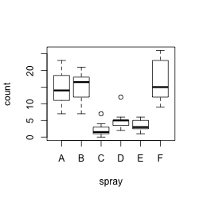
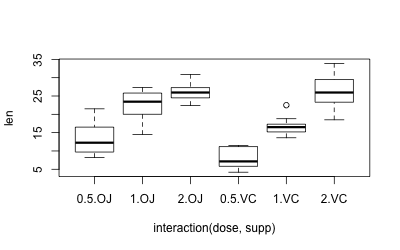

Homogeneity of variance
Problem
You want test samples to see for homogeneity of variance (homoscedasticity) -- or more accurately. Many statistical tests assume that the populations are homoscedastic.
Solution
There are many ways of testing data for homogeneity of variance. Three methods are shown here.
- Bartlett's test - If the data is normally distributed, this is the best test to use. It is sensitive to data which is not non-normally distribution; it is more likely to return a "false positive" when the data is non-normal.
- Levene's test - this is more robust to departures from normality than Bartlett's test. It is in the
carpackage. - Fligner-Killeen test - this is a non-parametric test which is very robust against departures from normality.
For all these tests, the null hypothesis is that all populations variances are equal; the alternative hypothesis is that at least two of them differ.
Sample data
The examples here will use the InsectSprays and ToothGrowth data sets. The InsectSprays data set has one independent variable, while the ToothGrowth data set has two independent variables.
InsectSprays # count spray # 10 A # 7 A # ... # 24 F # 13 F df <- ToothGrowth df$dose <- factor(df$dose) # Treat this column as a factor, not numeric # len supp dose # 4.2 VC 0.5 # 11.5 VC 0.5 # ... # 29.4 OJ 2 # 23.0 OJ 2
Quick boxplots of these data sets:
plot(count ~ spray, data = InsectSprays) plot(len ~ interaction(dose,supp), data=ToothGrowth)
 
On a first glance, it appears that both data sets are heteroscedastic, but this needs to be properly tested, which we do below.
Bartlett's test
With one independent variable:
# These two methods have the same result. # The first operates on two columns from a data frame, # while the second operates on two vectors. bartlett.test(count ~ spray, data=InsectSprays) bartlett.test(InsectSprays$count ~ InsectSprays$spray) # Bartlett test of homogeneity of variances # # data: count by spray # Bartlett's K-squared = 25.9598, df = 5, p-value = 9.085e-05
With multiple independent variables, the interaction function must be used to collapse the IV's into a single variable with all combinations of the factors. If it is not used, then the will be the wrong degrees of freedom, and the p-value will be wrong.
bartlett.test(len ~ interaction(supp,dose), data=ToothGrowth) # Bartlett test of homogeneity of variances # # data: len by interaction(dose, supp) # Bartlett's K-squared = 6.9273, df = 5, p-value = 0.2261 # The WRONG WAY to use it; note that df is wrong bartlett.test(len ~ dose*supp, data=ToothGrowth) # Bartlett test of homogeneity of variances # # data: len by dose by supp # Bartlett's K-squared = 0.6655, df = 2, p-value = 0.717 # The above gives the same result as testing len vs. dose alone, without supp bartlett.test(len ~ dose, data=ToothGrowth) # Bartlett test of homogeneity of variances # # data: len by dose # Bartlett's K-squared = 0.6655, df = 2, p-value = 0.717
Levene's test
The leveneTest function is part of the car package.
With one independent variable:
library(car) leveneTest(count ~ spray, data=InsectSprays) # Levene's Test for Homogeneity of Variance (center = median) # Df F value Pr(>F) # group 5 3.8214 0.004223 ** # 66
With two independent variables. Note that the interaction function is not needed, as it is for the other two tests.
leveneTest(len ~ supp*dose, data=df) # Levene's Test for Homogeneity of Variance (center = median) # Df F value Pr(>F) # group 5 1.7086 0.1484 # 54
Fligner-Killeen test
With one independent variable:
# These two methods have the same result. # The first operates on two columns from a data frame, # while the second operates on two vectors. fligner.test(count ~ spray, data=InsectSprays) fligner.test(InsectSprays$count ~ InsectSprays$spray) # Fligner-Killeen test of homogeneity of variances # # data: InsectSprays$count by InsectSprays$spray # Fligner-Killeen:med chi-squared = 14.4828, df = 5, p-value = 0.01282
The fligner.test function has the same quirks as bartlett.test when working with multiple IV's. With multiple independent variables, the interaction function must be used. If it is not used, then the will be the wrong degrees of freedom, and the p-value will be wrong.
fligner.test(len ~ interaction(supp,dose), data=ToothGrowth) # Fligner-Killeen test of homogeneity of variances # # data: len by interaction(supp, dose) # Fligner-Killeen:med chi-squared = 7.7488, df = 5, p-value = 0.1706 # The WRONG WAY to use it; note that df is wrong fligner.test(len ~ dose*supp, data=ToothGrowth) # Fligner-Killeen test of homogeneity of variances # # data: len by dose by supp # Fligner-Killeen:med chi-squared = 1.3879, df = 2, p-value = 0.4996 # The above gives the same result as testing len vs. dose alone, without supp fligner.test(len ~ dose, data=ToothGrowth) # Fligner-Killeen test of homogeneity of variances # # data: len by dose # Fligner-Killeen:med chi-squared = 1.3879, df = 2, p-value = 0.4996